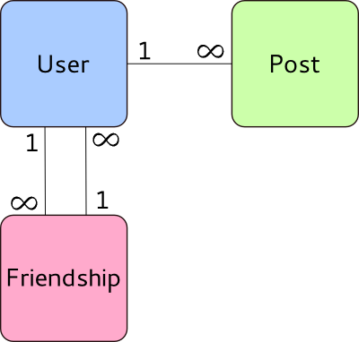

yum install -y gcc-c++ patch readline readline-devel zlib zlib-devel libyaml-devel libffi-devel openssl-devel make bzip2 autoconf automake libtool bison iconv-devel java
# Run as user not root curl -L https://get.rvm.io | bash -s stable source ~/.bash_profile
Check out your personal message from Wayne. So compassionate!
rvm install jruby
rvm use jruby rvm gemset create torquebox rvm use jruby-1.6.7.2@torquebox jruby -J-Xmx1024m -S gem install torquebox-server
TorqueBox creates a command line tool for managing your torquebox server. You can checkout the avaiable commands through:
torquebox
You can also checkout which versions of JBOSS, JRUBY and TORQUEBOX you are using.
torquebox env
torquebox run
gem install rails
Now that you have everything installed, you’re ready to rock n roll. It’s time to create your first rails application. You’re going to create a new social networking site called Face Blog.
First thing you need to do is create a rails application.
rails new face_blog
Notice the file structure. Every rails app looks the same. This makes it easy to quickly get involved in other rails projects. The main areas you’ll be working in today are:
app/* => Contains all your MVC files config/ => Used to configure your app db => where migrations and schema lives
First thing we’re going to add to our site is a User. We want to allow the user to login, signup and all that jazz. But of course we’re not going to write all that ourselves. We’ll use a library to do the grunt work for us.
We’re going to add “devise” (an authentication mechanism for rails) to our gem file
In the Gemfile, under
gem "rails", "3.2.3"
Add
gem devise
Then run bundler to pull in the dependecies into our gemset.
bundle update
Devise is a rails engine (guides.rubyonrails.org/engines.html), don’t worry about what engines are right now, we just need to know that we have to install it.
rails devise:install
To create our user model we’ll use a model generator. We don’t always have to stick to the generators that come with rails. 3rd party libraries can also offer generators. To see which generators you have avaiable to you. You can run
rails generate
For our user model we’ll use the devise generator.
rails generate devise User name:string dob:date
If you look at the migration that devise created (under db/migrate) you can see the extra information devise has added to support all forms of authentication.
Now that we’ve added some migrations we must migrate the database.
rake db:migrate
You can test out your model by looking in the rails console.
rails c 1.9.2p318 :002 > User.new
Face Blog’s Model relationships looks like this:
